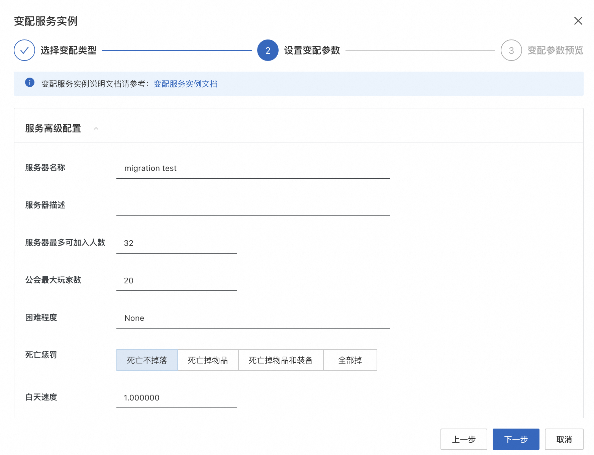
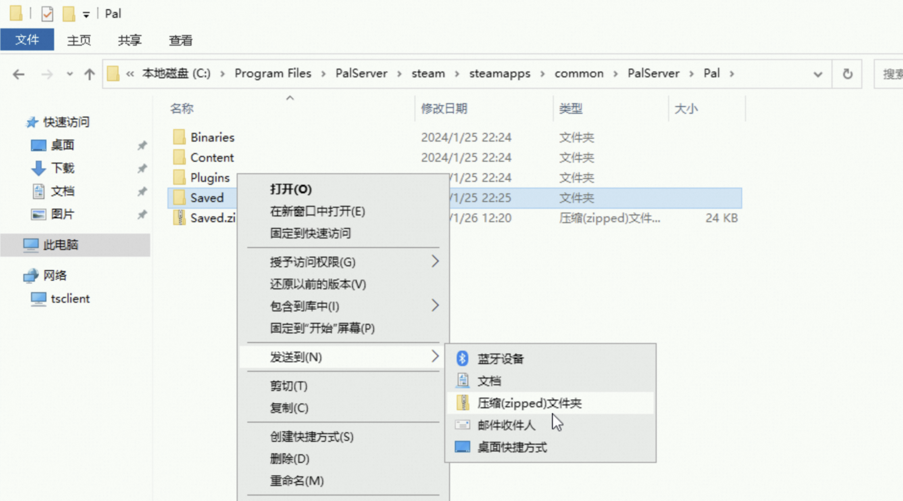
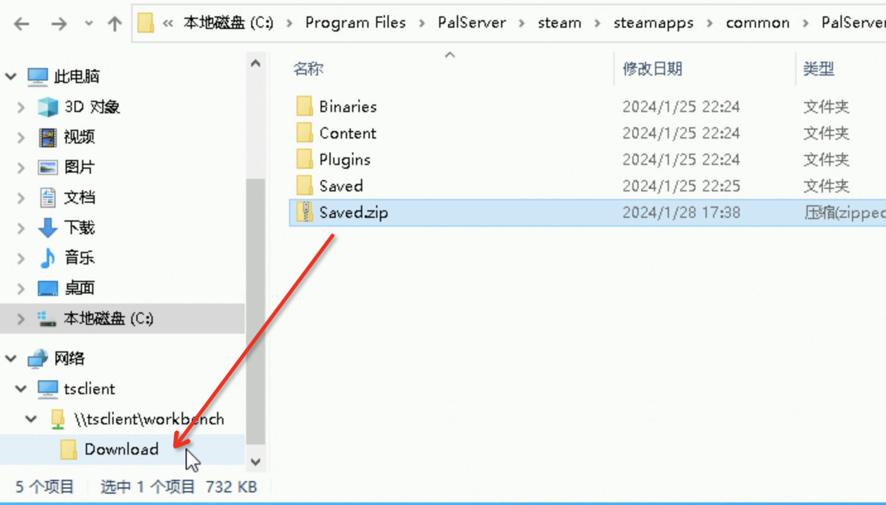
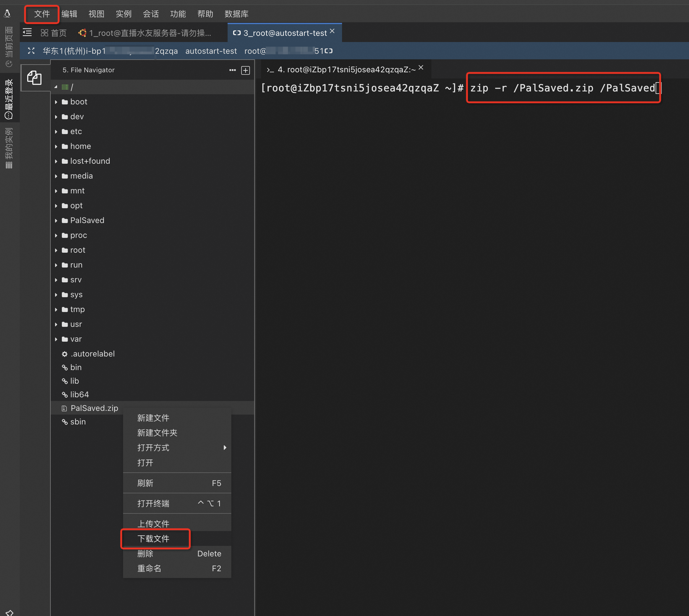
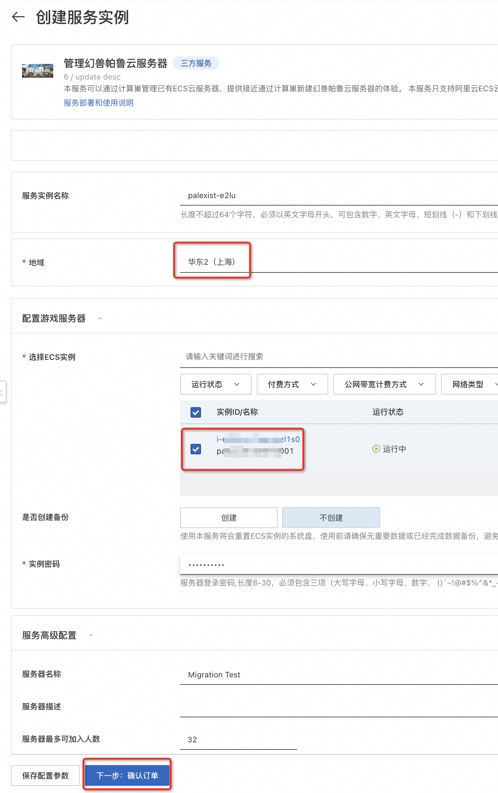
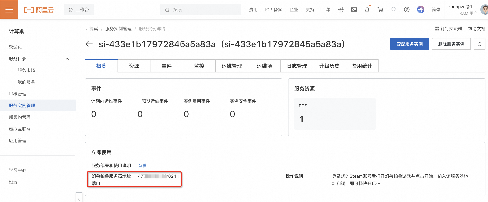
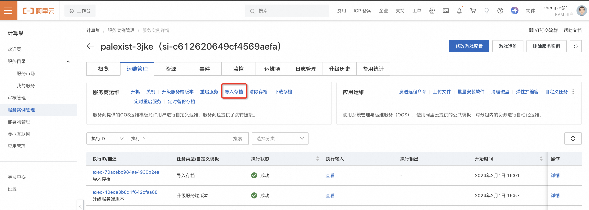

5 分钟，将你的幻兽帕鲁服务器迁移到计算巢
使用计算巢一键搭建幻兽帕鲁服务器的玩家，可以在控制台上直界面化修改死亡掉落等配置。 但如果你创建了 ECS，通过 ECS 扩展程序（OOS）来安装的幻兽帕鲁服务器，就没有这些界面化管理功能，需要登陆服务器手动修改配置文件，非常不方便。
为了解决这个问题，现在计算巢支持将你的幻兽帕鲁服务器迁移到计算巢来管理，让你也可以通过界面来管理配置项、升级游戏服务器。

升级过程非常简单，只需三步： 1. 备份存档 2. 创建计算巢幻兽帕鲁管理服务 3. 恢复存档
如果你原来的幻兽帕鲁服务器上还没有存档，那么你只需一步：创建计算巢管理幻兽帕鲁服务。
1. 备份存档（无存档可跳过）
为了使用计算巢的能力来管理幻兽帕鲁服务器，计算巢需要先将你的 ECS 服务器重置为计算巢定制的操作系统镜像。 所以，如果你的服务器上已经有了存档，为了避免你和帕鲁的努力白费，建议先备份存档。
1.1 Windows 系统的 Palworld 存档备份
如果你原来是通过 ECS 扩展程序（OOS）安装的幻兽帕鲁服务器，且操作系统为 Windows，你可以在这个路径下找到幻兽帕鲁的服务器存档：
C:\Program Files\PalServer\steam\steamapps\common\PalServer\Pal\Saved
你可以通过远程连接登陆到 ECS 服务器，将该目录打包下载到本地，用于备份。 具体操作： 1. 访问 ECS 控制台，找到你的服务器，点击 远程连接 > 立即登录。注意不要选择免密登陆。
<img src="images/connect_to_ecs_windows_ui.png" width="400"/>
- 备份前你需要先停止游戏服务，以确保所有的游戏进度已写入存档。你可以通过在 PowerShell 中执行这个命令来停止游戏服务。
powershell Get-Process -name PalServer-Win64-Test-Cmd | Stop-Process -
找到存档位置，将存档目录打包成 zip 包。
 4. 将压缩后的存档文件，拖动到 workbench\Download 目录后，就会触发浏览器的文件下载，然后将其下载到本地。

1.2 Linux 系统的 Palworld 存档备份
如果你原来是通过 ECS 扩展程序（OOS）安装的幻兽帕鲁服务器，且操作系统为 Linux，你可以在这个路径下找到幻兽帕鲁的服务器存档：
/PalSaved
你可以远程登录到 ECS 服务器，将该目录打包下载到本地，用于备份。 具体操作： 1. 访问 ECS 控制台，找到你的服务器，点击 远程连接 > 立即登录。
<img src="images/connect_to_ecs_windows.png" width="1000"/>
- 找到存档位置，使用如下命令将存档打包：
bash # 迁移前，请先停止游戏服务以确保迁移成功 docker stop palworld-server # 如果提示 command not found，说明没有安装 zip，可以尝试执行 yum install zip 先 zip -r /PalSaved.zip /PalSaved -
打包完成后，在 ECS 远程连接界面，点击左上角的文件，打开文件树。在打包后的 /PalSaved.zip 文件上右键，选择 下载文件。

2. 创建计算巢幻兽帕鲁管理服务（迁移到计算巢）
这一步骤非常简单，你只需要根据计算巢的界面指引完成即可。具体操作： 1. 访问计算巢幻兽帕鲁管理服务。 2. 然后选中你需要迁移的服务器，并根据指引，完成创建即可。

等待大约 5 分钟，任务就会执行完成，然后你可以在这里获取到新的服务器 IP 及端口。

3. 恢复存档
升级完成后，你可以进入到服务实例详情页。通过界面上的 导入存档 功能，来完成存档导入。

等待任务执行完成，就可以开始游戏了。
4. 常见问题
4.1 为什么升级后，我能登录游戏，但是过一会掉线了？
原因（看不懂可以跳过）
这个问题通常是出现在 linux 下。因为计算巢搭建幻兽帕鲁服务器，背后运行 PalServer 的 linux user 是 ecs-assist-user，而你有可能是使用 root 来操作了存档文件，导致 ParServer 无法写入存档，就会出现走几步写不了存档文件，程序就崩溃了。
处理方法
你需要远程连接到 linux 服务器，然后执行：
chown -R ecs-assist-user:ecs-assist-user /home/ecs-assist-user/.steam/steam/SteamApps/common/PalServer/Pal/Saved